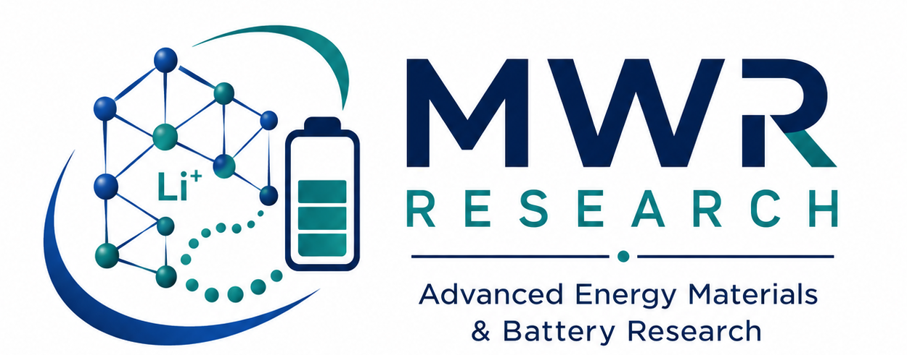

Dr. Mir Wasim Raja
Scientist-E/ प्रधान वैज्ञानिक Faculty of Engineering Sciences, Academy of Scientific and Innovative Research (AcSIR) / असिस्टेंट प्रोफेसर, इंजीनियरिंग साइंस (एसीएसआईआर)
Energy Materials & Devices Division ऊर्जा सामग्री और उपकरण विभाग CSIR- Central Glass and Ceramic Research Institute सीएसआईआर-केंद्रीय काँच एवं सिरामिक अनुसंधान संस्थान Ministry of Science & Technology, Govt. of India (विज्ञान और प्रौद्योगिकी मंत्रालय, भारत सरकार) 196 Raja S C Mullick Road/ 196, राजा एस सी मल्लिक रॉड कोलकाता 700032, पश्चिम बंगाल, भारत